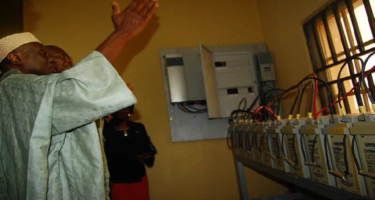
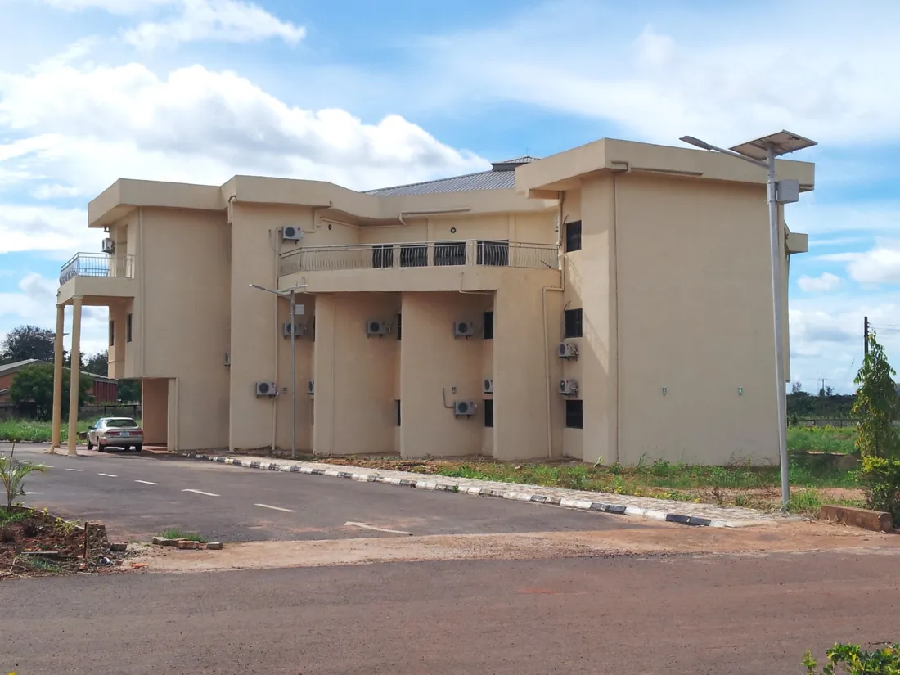

Apr302024
Call for papers
6th International Conference and Training Workshop announced
The Centre opened its call for papers for the 6th edition, with the first round of abstracts and full papers due on 30 April 2024.
Source: ncerd.com.ng
Conferences, training workshops, lectures and publications from the Centre.

The Centre opened its call for papers for the 6th edition, with the first round of abstracts and full papers due on 30 April 2024.
Source: ncerd.com.ngA full-time course from the solar resource through to PV system design, installation and maintenance. Open to applicants aged 18 to 40 with an engineering or science background, and to electricians.
Source: ncerd.com.ngEnergy Solutions for Attainment of Sustainable Development in Africa, edited by researchers of the Centre including the Acting Director.
Source: ResearchGateHeld physically and virtually on sustainable energy as a solution to post-COVID-19 energy challenges, with a training workshop from 25 April to 30 May 2022.
Source: ncerd.com.ngSolar PV experts from the Centre trained shortlisted participants at NCERD with the Council for the Regulation of Engineering in Nigeria and the Nigerian Energy Support Programme.
Source: ResearchGateEngr. Dr. I.F. Okafor spoke at the MSN Special Materials Lecture 2022 on materials for research and development of renewable energy devices.
Source: msn.ngHeld at NCERD alongside professional solar PV training organised with the German Agency for International Cooperation (GIZ).
Source: unn.edu.ngFor announcements not yet listed here, call +234 806 570 2570 or email ncerdunn@yahoo.com.